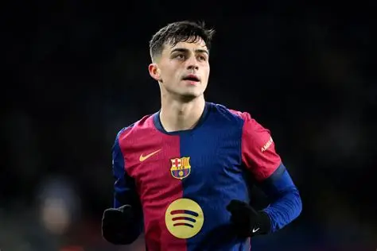

Pedri
Centrocampista

Datos personales
- Nombre completo: Pedro González López
- Fecha de nacimiento: 25 de noviembre de 2002
- Lugar de nacimiento: Tegueste, España
- Nacionalidad: Española
- Altura: 1,74 m
- Posición: Centrocampista
- Dorsal: 8
Trayectoria
- 2019-2020: UD Las Palmas
- 2020-actualidad: FC Barcelona
Estadísticas con el primer equipo
- Partidos: 150+
- Goles: 25+
- Asistencias: 20+
Biografía
Pedri llegó al FC Barcelona en 2020 procedente de Las Palmas. Su visión de juego, técnica y madurez le han convertido en uno de los mejores centrocampistas del mundo. Ganó el Golden Boy en 2021 y ha sido pieza clave en el Barça y en la selección española.